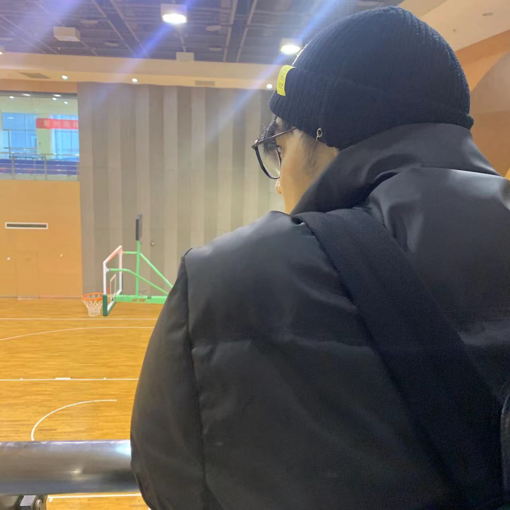

About Myself My name is Chunru Yan, and I am a student of Computer Science.  Fig1. - A picture about the Chunru Yan
My Hobbies My hobbies are watching movies. My favourite movies are Harry Potter Daniel Radcliffe Emma Watson The Avengers Robert Downer Jr. Chris Evans Inception Leonardo DiCaprio Joseph Gordon-Levitt The Truman Show Jim Carrey Laura Linney Contratiempo Mario Casas Ana Wagener